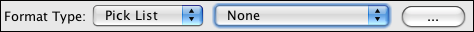

Any field in which data is limited to a controlled vocabulary is called a Pick List. For example, Specify ships with the Agent Title field limited to the choices of Asst. Director, Curator, Dr., Mr., Mrs., and Ms.
At first glance, Pick Lists may seem to be the same as Query Combo Boxes, but Pick Lists are typically a small set of values and do not need to be queried.
Pick Lists that are defined within Specify are called System Pick Lists. New pick lists created by the user are referred to as User Pick Lists.
System Pick Lists can not be deleted or added within Specify, but can be edited in a limited capacity. Only Pick Lists with definable items can be edited, not Pick Lists that use a Field from a Table or Entire Table. Pick List names and types are also not editable.
Editing is performed in the Pick List Editor.
Choose System > Collection Setup > Configuration then choose Pick List Editor from the Sidebar menu.
A second dialog will open for configuring the Pick List. The Pick List items are located at the bottom of the dialog.
Note: The Pick List Editor can also be opened in System > Schema Configuration, which requires high level of permissions to use.
Any string field can be configured as a Pick List.
Note: User defined Pick Lists can be created, but they will not be included in any of the forms. To use the Pick Lists within a form, the form itself must be edited. At this time Specify 6 does not include a Form Editor, as was found in Specify 5. It is important to note that the forms have been created programmatically to be extremely flexible and can be exported as XML and either edited by on-site staff or emailed to the Specify staff. To export a Form please refer to Importing/Exporting. If you wish to have a member of the Specify team edit the form please contact them at specify@ku.edu.Add, delete and edit the Pick Lists in the Pick List Editor found in System > Schema Configuration ... .
The Schema Configuration tool will open.
The following combo box and button appears:

The second combo box is used to choose a Pick List for the field. The (...) button opens the Pick List Editor.
Add a Pick List
A second dialog will open to configure the Pick List. There are three types of Pick Lists, all with different configurations.
User Defined Items is a predefined list. Items in this type of Pick List are either created by the user (controlled vocabulary) or created as values are typed into a field.
A predefined Pick List is very useful to control the exact data entered into a field. A good example of this is Type Status Name in the Determinations form. Anyone entering Determinations is limited to the same set of data choices.
To create a predefined list of items:
A Pick List that is created as values are typed into the Pick List field is useful when needing to create a controlled list of values for a particular field, but still desiring to enter values on-the-fly.
To create a Pick List that is created from entered values:
Entire Table allows all values in a formatted table to be listed. This is a useful tool when the field needs to link to an entire record but the list of values is small and a Query Combo box is not necessary.
To create an Entire Table list:
Field From Table uses the values from a field within a table. Creating a Pick List from a field is only feasible when there will be a small number of values. If the number exceeds 12 it is suggested that the field be linked to Query Combo Box within the form rather than a Pick List.
To create a Field From Table list:
Once the Pick List has been created, it will need to be linked to the field.
Edit a Pick List